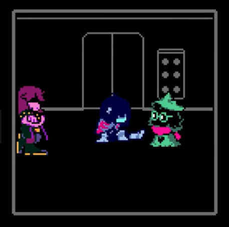
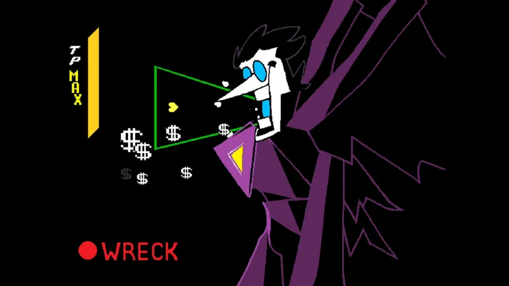
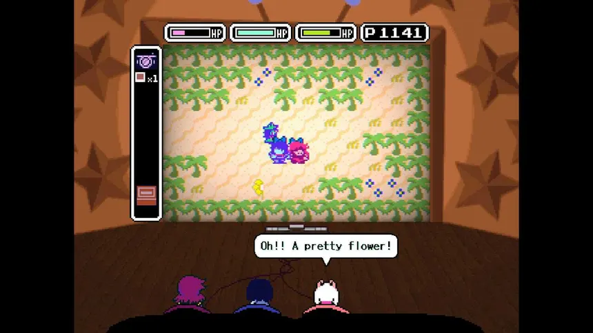
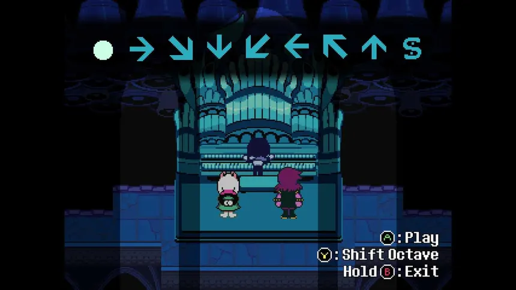
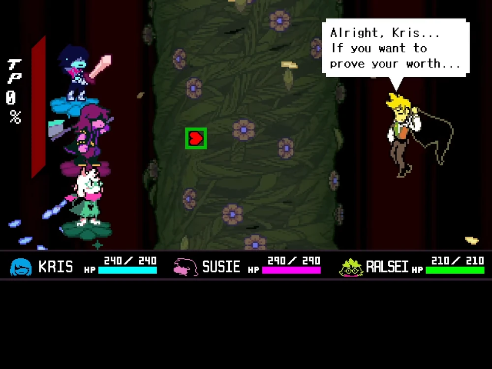

Um repositório dedicado ao universo de Deltarune.
Se quiser dar uma refrescada na memoria dos eventos mais importantes que ocorreram nos capitulos recentes do jogo. Pode descobrir por aqui!

O Capítulo 1, intitulado "The Beginning" (O Começo), inicia-se com o protagonista, Kris, um adolescente humano, vive com sua mãe, Toriel, e frequenta a escola em Hometown. Durante um trabalho escolar, ele se torna par de Susie, uma estudante reptiliana alta. Ao tentarem pegar giz, eles acidentalmente descobrem o Mundo das Trevas, onde encontram Ralsei, um Príncipe das Trevas que os informa que são os heróis da Profecia, destinados a restaurar o equilíbrio entre luz e trevas. Enquanto avançam, eles encontram Lancer, um vilão cômico que tenta detê-los. Susie, sentindo-se desvalorizada, se junta a Lancer, mas a amizade deles desenvolve sua compaixão. Eventualmente, todo o grupo se reúne, e Lancer ajuda a derrotar seu pai opressor, King. Após selar a Fonte do Leste com o poder da ALMA humana de Kris, Kris e Susie retornam ao seu mundo, encontrando-se em uma sala cheia de brinquedos que representam suas experiências no Mundo das Trevas. Eles concordam em voltar no dia seguinte.
Personagens: Kris, Susie, Ralsei

No dia seguinte, Kris e Susie regressam à escola e acabam por entrar num novo Dark World, desta vez relacionado com a sala de informática. Nesse mundo, encontram Noelle Holiday e Berdly, dois colegas de turma que também ficam envolvidos na aventura. O grupo descobre que o local é governado pela Rainha, que pretende utilizar os poderes de Noelle para concretizar os seus planos. Ao longo da jornada, Kris, Susie e Ralsei tentam impedir a Rainha de provocar uma catástrofe. Susie e Noelle tornam-se mais próximas, enquanto Berdly começa a questionar as suas próprias capacidades e decisões. Depois de vários desafios, os heróis enfrentam a Rainha e conseguem impedir os seus planos. Por fim, selam a Fonte das Trevas e regressam ao mundo da Luz. Apesar da vitória, o mistério do Cavaleiro continua por resolver, e os acontecimentos demonstram que existem outros Dark Worlds para além daquele que conheceram inicialmente.
Personagens: Kris, Susie, Ralsei

Depois dos acontecimentos do segundo capítulo, Kris regressa a casa e acaba por se envolver numa nova aventura num Dark World criado a partir da televisão da família. Kris, Susie e Ralsei encontram Tenna, uma personagem associada ao mundo televisivo que os envolve num programa de entretenimento. Para avançarem, os heróis têm de participar em diferentes jogos, provas e desafios, enfrentando situações que testam as suas capacidades e a relação entre eles. Ao longo da aventura, o grupo tenta compreender as intenções de Tenna e encontrar uma forma de resolver o conflito. nquanto enfrentam os desafios do programa, Kris, Susie e Ralsei continuam a desenvolver a sua amizade. O capítulo combina momentos cómicos com novos mistérios sobre os Dark Worlds e as personagens que os habitam, preparando o caminho para os acontecimentos seguintes.
Personagens: Kris, Susie, Ralsei

Kris e Susie acompanham Toriel à igreja de Hometown. Depois, os dois procuram pistas relacionadas com o misterioso abrigo da cidade, incluindo informações que podem ajudar a descobrir os códigos necessários para o abrir. Durante a investigação, visitam a casa de Noelle e descobrem mais elementos relacionados com os mistérios que envolvem a cidade. Mais tarde, acabam por descobrir uma nova Fonte das Trevas na igreja e entram num mundo desconhecido. Nesse Dark World, Kris e Susie exploram santuários misteriosos e enfrentam vários desafios relacionados com a profecia. Durante a aventura, encontram o Velho, uma figura sábia que lhes fornece informações importantes, e voltam a confrontar-se com o Cavaleiro. Susie também começa a questionar as informações que Ralsei lhes tem dado sobre a profecia, levantando dúvidas sobre aquilo que o príncipe realmente sabe. No final, os heróis enfrentam uma ameaça poderosa e conseguem impedir uma nova catástrofe, mas os mistérios do abrigo, do Cavaleiro e das Fontes das Trevas continuam por resolver.
Personagens: Kris, Susie, Ralsei

O capítulo começa durante o festival de Hometown, onde Kris, Susie e Noelle passam algum tempo juntos. Depois de uma chamada de emergência, Noelle afasta-se do grupo, enquanto Kris e Susie se dirigem à loja de flores de Asgore. Nesse local, Kris cria uma nova Fonte das Trevas, levando os dois a entrar num novo Dark World. Nesse mundo, os heróis encontram Flowery e descobrem que Asgore está envolvido nos acontecimentos. Após enfrentarem vários desafios, o grupo confronta Flowery, mas o Cavaleiro aparece e rapta Asgore. Os heróis conseguem selar a Fonte das Trevas, encontrando também uma pista relacionada com o misterioso abrigo de Hometown. O capítulo termina com novas perguntas sobre o Cavaleiro, o passado de Asgore e os segredos de Kris.
Personagens: Kris, Susie, Ralsei